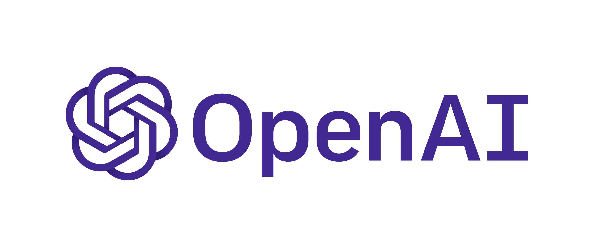

Artificial Intelligence
Notable Figures in Artificial Intelligence:

- Elon Musk:
Elon Musk is the Co-founder and Chairman of OpenAI, a non-profit organization focused on creating safe
artificial general intelligence (A.G.I.) that enhances humanity and avoids possible risks of A.I.
Musk’s organization performs groundbreaking research and develops open-source tools for experimentation.
OpenAI strives to create neural implants that connect the human brain to artificial intelligence,
allowing people to operate computers, artificial limbs, and other equipment simply with their thoughts.
- Anita Schjøll Brede:
Anita Schjøll Brede is the CEO and Co-founder of Iris.ai, an A.I. scientist that will read any scientific text,
extract the concepts, cluster them for context, and present it to a user in a way that non-technical users will
understand. Using algorithms, the A.I. system searches through over 60 million papers for the most relevant articles.
Schjøll Brede’s objective isn’t to make money, but to improve people’s lives, and to contribute to researching deadly
illnesses.
- Jürgen Schmidhuber:
Schmidhuber is the Co-founder and Chief Scientist of Nnaisense. Schmidhuber formed Nnaisense to work on commercial
applications of A.I. in fields such as finance, heavy industry, and self-driving cars. He is known as the
father of modern A.I. for creating the mechanisms that allow us to use and communicate with our phones.
Currently, his research focuses on developing artificial neural networks that are equivalent to, and will
eventually surpass, the human brain.
- Fei-Fei Li:
Fei-Fei Li is the Chief Scientist of Google Cloud and a professor at Stanford University. Her research is
dedicated to computer vision, A.I. and healthcare, and cognitive neuroscience. Currently, she is on a mission
to democratize A.I. —to guarantee that talent and expertise are shared outside large corporations in order
to increase diversity, creativity, and innovation. Her non-profit, AI4ALL trains the next generation of A.I.
scientists, entrepreneurs, and philosophers and aims to educate and excite students about the field of A.I.
by providing exposure to a variety of A.I. topics.
- Robin Li:
Robin Li is the CEO and Founder of Baidu, a Chinese multinational technology company specializing in
Internet-related services, products, and A.I. Baidu offers various services, including a Chinese search
engine similar to Google. Since Baidu is the dominant internet search engine company in China, most of the
search market is focused on China. Baidu also offers a mapping service called Baidu Maps, an online encyclopedia
such as Baidu Baike, a cloud storage service (Baidu Wangpan), and a keyword-based discussion forum called Baidu Tieba.